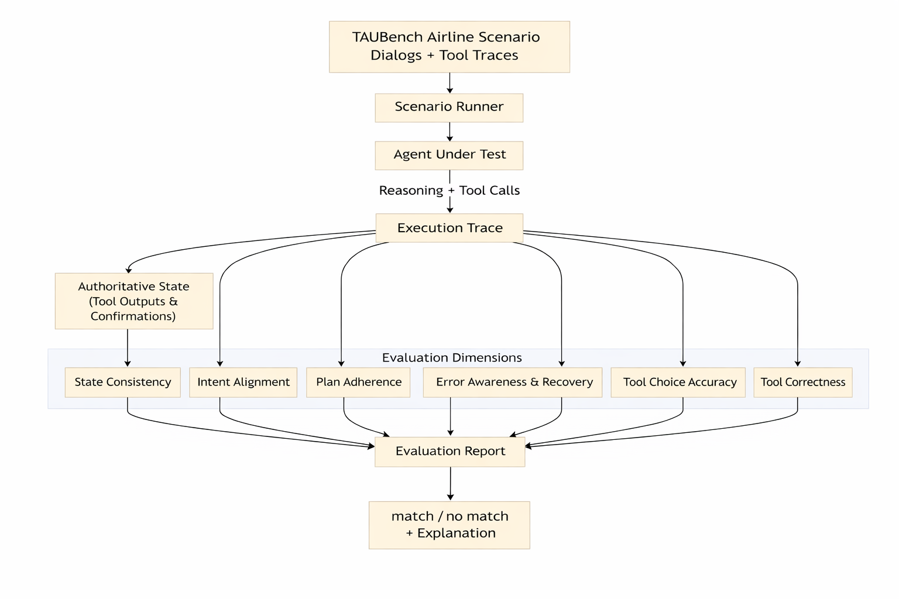
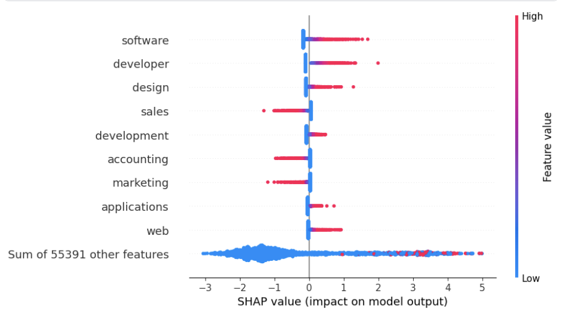

From Features to Actions: Explainability in Traditional and Agentic AI Systems
From Features to Actions: Explainability in Traditional and Agentic AI Systems
Abstract
TODO: Add abstract here.
Table 1: Interpretability Method Families for Static and Agentic Models
| Method family | Representative methods | Explanation artifact | Role in static models | Additional needs in agentic systems |
|---|---|---|---|---|
| Attribution and saliency | LIME, SHAP, PDP saliency, Grad-CAM | Feature scores, heatmaps | Identify input regions/features that drive a single prediction | Explain action selection at each step; connect attributions to tool choice; relate decisions to plan/state evolution |
| Attention-based analyses | Attention rollout, relevance propagation | Token influence paths | Interpret token-level influence during generation | Track attention shifts across steps (planning → retrieval → execution) and across multiple context sources |
| Concept-based interpretability | Probes, TCAV, VLM concepts | Concept scores, probe accuracy | Test whether concepts are encoded in representations | Represent goals/subgoals, constraints, tool intent, and state variables beyond raw feature concepts |
| Mechanistic interpretability | Circuits, ACDC, sparse autoencoders | Causal subgraphs, features | Localize internal mechanisms behind predictions | Analyze causal interactions across memory modules, tool interfaces, retrieval components, and policy updates |
| Reasoning and execution traces | CoT, ReAct, Reflexion | Stepwise traces, logs | Provide a human-readable rationale for one output | Require trajectory-level linking (reasoning → action → observation) and replayable traces tied to outcomes |
| Retrieval provenance | Attention visualization, evidence paths | Citations, provenance graphs | Justify outputs using retrieved evidence | Attribute which evidence drove which actions and revisions; detect retrieval-induced failure cascades |
| Counterfactual explanations | Recourse, counterfactual evaluation | What-if alternatives | Identify minimal input changes to alter prediction | Define counterfactuals over trajectories: alternative plans, tool calls, and decision branches over time |
| Verification and auditability | Simulatability, robustness checks | Faithfulness signals | Optional evaluation layer for explanation quality | Make verification first-class: faithfulness checks over long horizons, consistency under replay, and rubric flags |
| Agent loop interpretability | Causal probing via dialogue | Hypotheses with interventions | Not applicable | Explain multi-turn behavior via validated interventions on state, tool access, or observations |
Trace-based evaluation pipeline

Global SHAP beeswarm showing features driving predictions toward IT or NON-IT.

Table 2: Static vs. agentic explainability on the bridging job-posting agent task
| Approach | Unit explained | Primary artifact | Grounding evidence | What it can diagnose |
|---|---|---|---|---|
| Static (SHAP/LIME/PDP) |
Final prediction | Feature attributions | Input tokens/features | Token-level drivers of the outcome, but not intermediate decisions |
| Agentic (Trace rubrics) |
Trajectory | Execution trace + rubric flags | Tool calls, arguments, observations, state updates | Failure localization (tool misuse, state drift, missing recovery, plan deviation) |
| MEP (ours) | Prediction + trajectory | Artifact + context verification | Attributions + trace + outcome-linked signals | End-to-end oversight with decision-level and execution-level accountability |
BibTeX
To be releasedAcknowledgments
Resources used in preparing this research were provided, in part, by the Province of Ontario and the Government of Canada through CIFAR, as well as companies sponsoring the Vector Institute (partners). This research was funded by the European Union’s Horizon Europe research and innovation programme under the AIXPERT project (Grant Agreement No. 101214389), which aims to develop an agentic, multi-layered, GenAI-powered framework for creating explainable, accountable, and transparent AI systems.